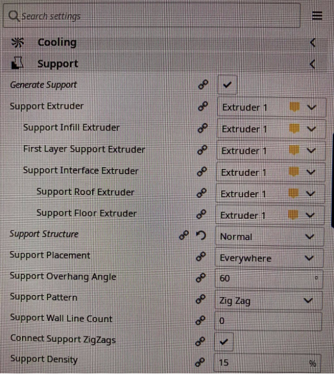

3D printing and scanning project
The third individual project of the semester is to design and print an object in 3D that can not be made by cutting. Additionally, scanning any object in 3D is a part of the project. A small group project, finding the restrictions of the 3D printer used for the individual project is included in the design chapter.
Table 1: Workload
| Project part | Working time [hours] |
|---|---|
| Finding inspiration and watching tutorials | 2 |
| Planning and drawing | 8 |
| Execution of group project part | 2 |
| Preparing printer and printing prototype | 2 |
| Preparing printer and printing | 2 |
| Afterwork | 5 |
| 3D scanning | 1 |
| Documentation | 5 |
| Total workload | 23 hours |
Finding inspiration
Finding inspiration, just like in project number 2, consisted of taking a look at life and finding something that could be made easier or better in any way. That way the item made would be useful.
After a while I came to the conclusion to make a splint for hypermobile fingers, as that is a problem I have and really does affect daily life. Common splints are made of silver and are very expensive, as they are custom made, and the material is not affordable. This became the inspiration for the 3D printed finger splint.
Search words used for information gathering: html setup, diy finger-splint, 3D-printed brace for finger, plastic finger-splint.
Designing the splint
Below there are photos of a silver splint as well as a 3D printed splint found online. The design was not available to download and edit, it was only available on *.stl form in different ring sizes.

As the photos show a finger-splint for hyperextension will support the front of the finger at the middle ligament and the back of the finger on either side of the ligament. To determine the size a finger was measured with a thread and a ruler above and below the ligament, and later on the circumference of the splint matched to that.
The group part of the project is important to note, as it sets some restraints on designing for the 3D printer. How it was done and what it tells whoever uses it is listed in Icelandic on this page.. The sample shows at which point support is needed when 3D printing the item. As listed in the project support is needed at 60% overhang, and that will be kept in mind when printing.
Planning the execution
The first step of the execution of the project was adding parameters. A video suggested by the course teacher that can be seen below was used as a guide.
The parameter in this project that is most important is the circumference of the "hole" that forms the base. Below all of the parameters can be seen.
Drawing
The first few steps in the drawing the design were drawing a simple circle with the desired circumference and thickness of the splint.
Next the outer circle is extruded to hte desired length, in this case 22mm, as seen below.
Following the inner circle is also extruded to hollow out the shape.
After that a sketch of the cut-outs is made. To ensure that the splint is comfortable the width of the bands is set to 3,25mm and the cut-outs are then made to meet in a radius of around 2mm. The rest is made to match the previously mentioned 3D design approximately in looks.
After the shape of the cut-outs is finished the sketch is extruded to cut it out. These last two steps were done a few times before the intended shape was aquired.
Finally the edges had to be shaped, as sharp edges would understandably not be comfortable. A fillet is made on all edges as seen in the picture below.
The finished design was then saved as an *.stl file and the outcome can be seen below.
Preparing and 3D printing prototype
After being saved as an *.stl file the design was moved over to the computer connected to the 3D printer, Ultimaker 3 extended, is connected to. Here, in consultation with Hafliði the course teacher, it is decided to first make a prototype with faster printing, with layer height at 0,2mm, to see if the size is accurate. The settings for that can be seen below.
According to the sample made in the group-part of this project support is added at 60% overhang.
The support chosen is Zig Zag and the blueprint of the splint is shown below.
Printing in action can be seen here:
The size came out great so the settings were updated to layer height 0,06mm for smoother printing, the support changed to lines to minimize the afterwork and the printer started. Unfortunately changing the support type did not go well and the item started moving with the printer-head. This resulted in having to restart the process, as the splint was not useable.
Now the support is changed back to zig zag and the printer started for the third time. This time it went great and the splint looked good.
Now the afterwork of taking out the support with a tong and a knife had to be done. After that the splint was sanded for even smoother surface. Below it can be seen on a finger.
The outcome was great and the splint really is usable and does help, for example when pushing buttons and doing dishes it saves a lot of pain! Both the prototype and the final edition can be used, even though one is better looking.
If the button below is clicked you will be redirected to my github repository, where a file with the design can be found under the name fingurspelka.dxf.
3D scanning
An app called Qlone is used for the purpose of scanning a 3D object with an iPhone. The app guides the user through the process so it was a good choice for a first 3D scanning experiment. First a mat is printed and the item to be scanned placed in the middle.

The item to be scanned preferably has to be matte. At my office I have a rubber duck. It was given to me as a joke for rubber duck debugging, which actually is quite useful and can be read about further here.
The first few scans did not go great as it seems to require a bit of practice. The item was scanned stranding up and laying on the side.
After a few tries it turned out relatively good, a gif of the outcome can be seen below.